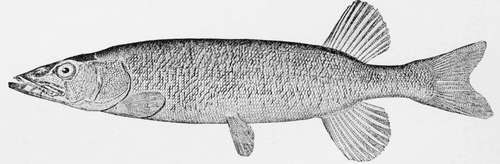
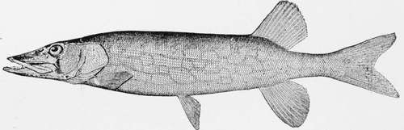

The Pickerel
Description
This section is from the book "American Game Fishes", by W. A. Perry. Also available from Amazon: American Game Fishes: Their Habits, Habitat, and Peculiarities; How, When, and Where to Angle for Them.
The Pickerel
When sunny youth or lovely girlhood takes to fishing; when woman, "spurred with a vaulting ambition," de-sires even to eclipse her husband-when the soul that looks out of the windows is growing dim ! when the grinders cease because they are few ; when the ambitions of earth wane, and the days slip almost unconsciously by, and of the loves of former years that remain-the love of boyhood; the strong love of a strong manhood; the declining love of well-spent life-the desire comes once again to go-a-fishing- and the slippered feet are once again guided gently to a boat and made comfortable, and-and to fishing the old sire goes.
All the memories of boyhood's days return again, and the cunning of his hand comes to him once more;, he recounts incidents of many years fishing lore, but it is of Pickerel fishing.
To the boy just beginning his piscatorial career, the Pickerel is the fish of all fish. The "Beauty that draws us with a single hair," does not at first attempt to inveigle the wary trout; but the Pickerel is fair game-and many a bout does fair womanhood have with reticulatus before she attempts to fling a line for either Bass or Trout.
But What Is A Pickerel?
"English as she's spoken," says Pickerel or Jack is a young Pike. This idea was fostered by some transplanted Anglo-Americans who thus tried to engraft English names on the fauna of the American waters; but Cope, Gill, Thompson LeSeur, Kirtland, and Jordan have taught even boys better; they know more than their fathers did-the difference between the members of the Esox family.
E. reticulatus (LeSeur). Common Eastern Pickerel; Green Pike. The snout much prolonged; front of eye about midway in head; eye more than three times in snout; coloration, green; sides with a net work of brown streaks.
Streams of Atlantic States abundant, but not found far in the interior.
E. cypho (Cope). Vulgate Humpbacked Pickerel, probably best known by the elevated back and broad swollen ante-dorsal region. Colors usually plain (olive green) or somewhat reticulate. Western States.
E. Americanus (Gmelin). Banded Pickerel; Trout Pickerel. The snout much shorter than in the preceding; eye much nearer snout than opercular margin. Color: dark green; sides with about twenty blackish curved bars; scarcely reticulated. Length, rarely a foot long. Home, Atlantic Streams.
E. Salmoneus (Rafinesque). Little Pickerel; Western Trout Pickerel. Size and general form of preceding, (about a foot long,) or more slender. Color, olivaceous green above, tinting to a white below; sides with many reticulations and curved streaks, instead of bars; a black streak in front of eye as well as below. Western streams-abundant. Resem bles reticulatus more than Americanus.-Jordan.
Comparing the reticulatus and lucius, anyone can readily distinguish the points of difference defined in the descriptions of Rafinesque, Cope, and LeSeur; and the Pickerel once out of the water, his relations with the Pike family are established.
The Pickerel are spring-spawners hence boys see them just as soon as the ice has cleared out, the snow-water gone and the warm days come. They are found in shoal water amongst weeds, or where the branches of trees are projecting from the shore into the water. Here they are found in pairs, gently swimming backward and forward in the stream, rubbing side by side until the female is ready to spawn. They are careless fish-leaving the spawn to take care of itself until the gentle undulations of the stream and the warmth of the sun's rays produce the young fry.
Western Brook Pickerel-umbrosus.
As soon as these are able to take care of themselves, they show the family likeness, and begin their bold predacious attacks on the fry of the silver chub and shiner family. They are greedy feeders, and from the time they are the length of the little finger, the Pickerel are looking for something nice to eat.
Years ago, ere the appliances for fishing had improved to their present stage, I was fishing with a crude, jointed rod, home-made-the rod a simple home-spun affair-and was enjoying the sharp vicious strikes of Pickerel that were abundant in the local waters, forgetting that my ancient enemy, a pugnacious and well-developed ram, was in the pasture lots. His butting propensities had caused a declaration of war between us; boy like, I enjoyed many a bout with him, but always had to cut and run, for he would chase and butt at me until my wind was exhausted. Being fleet of foot I could outrun him every time.
I was quietly casting across stream into some dog-tail weeds, where we could always find Pickerel, when hearing the familiar b-a-a-h-h! behind me, I turned, and there was my enemy, head up and "sniffing the battle afar off." I had just been congratulating myself that I was safe, shaking my fist and laughing at him, because another stream ran between him and myself, about forty feet wide.
A Pickerel took my bait and was running down stream. I was fishing just then: the ram did not trouble me any. After playing this fish a few minutes I landed him, and put on another minnow, had cast out a few yards down stream, and struck another fish; he was gamy and gave me plenty of fight.
Absorbed with my fish I forgot my surroundings. The
Pickerel or Federation Pikb-Bsox reticulata*.
Pickerel was righting to get my line round some of the roots that run out into the stream. The hook held good but my fish was too cunning for me; a quick movement and my line was in a tangle. I stooped to disentangle the line, my head well over the river, when a fearful butt, a plunge, a splash, a yell, a sputter, and a half-choking boy came to the surface. The moment he got his breath, there was a string of threats and vows of death and vengeance against the old ram. Hatred and scorn could not wipe out this bitter insult. If it must be a fight, let us have it out now; but the ram was rampant; never an inch would he yield, not even to let the boy get out of the water. Hadn't he put in some good licks and run up the pasture, and jumped at the end of the stream to come at me? Hadn't he come to accept the challenge? Hadn't he took me at my word and downed me? and I was all this time swimming. Yes he had got the best of me; but I must get out or drown! Making for the bank, I seized the butt of my rod, detached it, and as Mr. Ram charged, I gave him a crack across his nose that halted him.
Continue to: